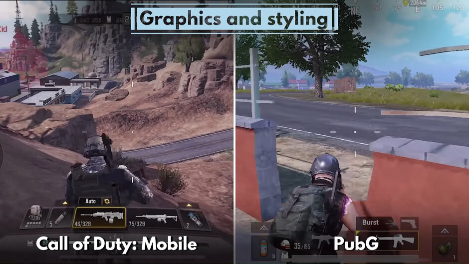
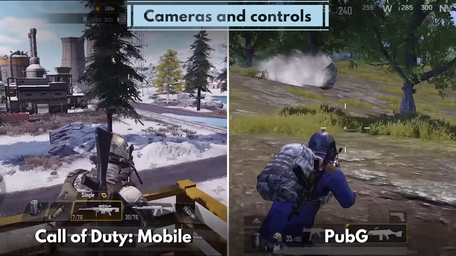
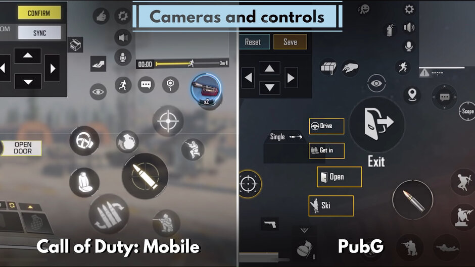
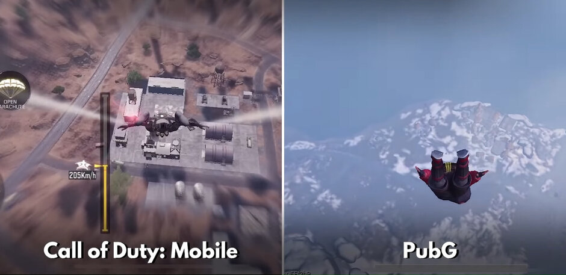
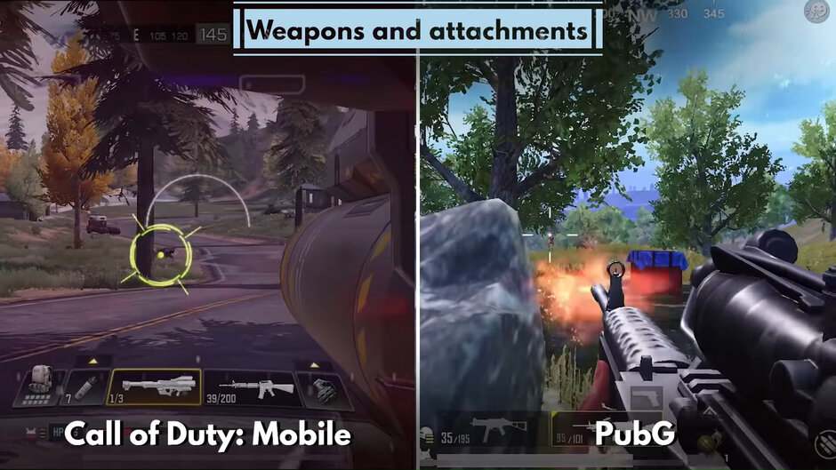
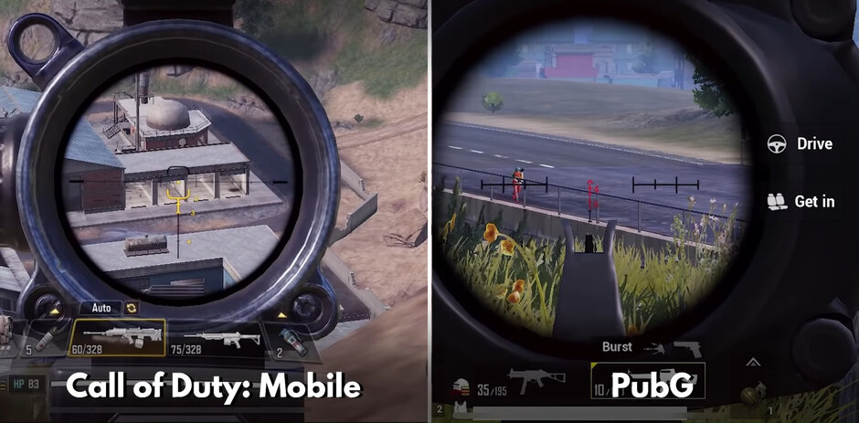
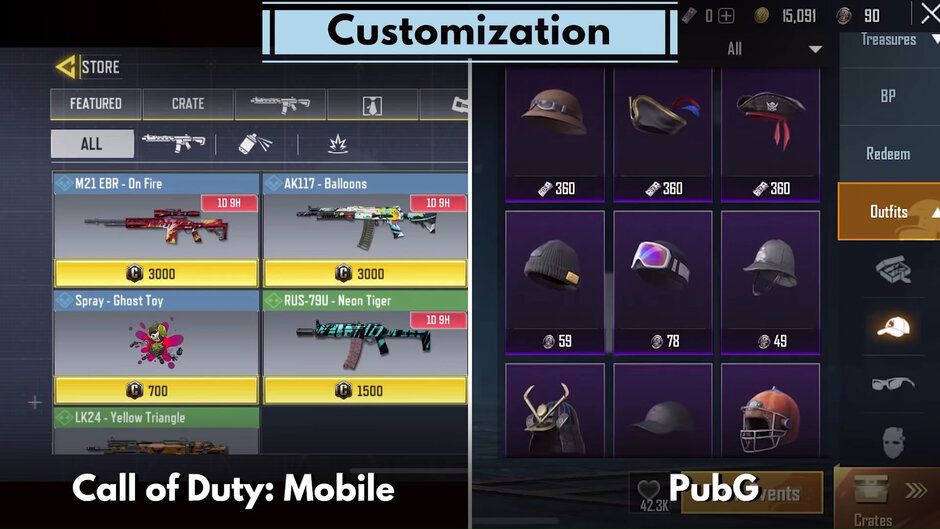

Mobile gamers have come a long way in the last few years and the competition is getting fierce. Call of Duty took
its sweet time to arrive on Android and iOS but now it’s a force to be reckoned with. It has its own battle royale
mode, throwing the glove to established games in the genre like PubG.
This is our first 1 vs 1 game review: we’re pitting Call of Duty vs PubG. To keep things slightly simpler, we’ll
focus only on the battle royale modes of the two games. Let’s get to it!
1. Graphics and styling

On CODM, the good impressions start as soon as you enter the game and see your character model. Extremely
detailed, no flat textures trying to hide the lack of polygons. Once you jump into action, the goodness continues.
The environment is as realistic as you get: trees, grass, mountains, they come together perfectly to create an
immersive environment.
One big difference between the two games is how they approach character models. In CoD, it’s all about looking
badass with your matching military outfits and tricked out guns. In PubG, you get a lot more freedom to customize
the looks of your character, starting from skin color, hair and so on. Then you get to the clothes. There are so
many pieces of apparel and accessories in this game it’s kind of ridiculous. At some point, you start wondering if
you’re playing a shooter or another iteration of Sims.
So while CoD tries to make you feel like a highly trained killing machine out on a mission. Meanwhile, PubG gives
you the choice to be as serious or as goofy as you want.
2. Cameras and controls

Both games offer single three modes when it comes to team size: single player, meaning you against everyone else,
duos, where you’re paired with another player or a friend, and quads, or teams of 4. Here, the extra point goes to
CoD: Mobile for having the option to revive dead teammates using their dog tags. A revived player will be able to
join the action after jumping from a plane in a couple of minutes. The problem is, many players don’t have the
patience to rejoin the action and leave the game before they can be revived, making the feature redundant.
The similarities continue when it comes to controls. Both games offer extreme levels of customization. You can
move and resize buttons any way you want, choose your preferred way to aim or steer a vehicle. The same goes for
the looting options. You can select which items your character will pick up automatically and how many of each, if
they should open doors automatically or not and so on. With enough time, you can tailor the game settings to fit
you perfectly.

One major difference between the two games is that Call of Duty has an auto-fire mode that PubG lacks. With
autofire on, when your crosshair is on an enemy player, you start firing automatically. This can be useful, since
it means your thumbs are free to control movement and aim, however, it has some obvious drawbacks. For example, if
you’re taking a shot from a distance and the enemy is moving, you have to aim in front of them to hit them. With
autofire on, you won’t be able to do that. Overall, it’s better if you pull your own trigger in battle royale
mode.
3. Maps/zones

Okay, you’ve selected your preferred time size and camera view, your controls fit like a glove, it’s time to get
in the action! In both games, that means jumping off an airplane. In CoD, it’s a cool, futuristic one, while in
PubG it’s a standard turboprop one but players can choose different skins for it! What’s more important is where
you land.
This is the Ace PubG has up its sleeve. The game has 4 massive maps with completely different environments. The
original one was followed by a desert one, a winter one and an Asia-themed one. You can select them individually
or at random. The number of maps greatly improves replayability and ensures you won’t get bored from seeing the
same locations all the time.
To be fair, Call of Duty is a much younger game and we’re sure it will get additional maps as time goes by. For
now, however, it’s trying to catch up by offering diverse environments all in the same map. You have snow in one
corner and desert in the other with green grass and trees in-between. Sure, it’s not very realistic, but it lets
you change the scenery in a matter of minutes.
4. Weapons and attachments

In both games, you begin without any firearms and getting one fast is a top priority. Here, Call of Duty’s focus
on fast-paced action becomes apparent once more. Powerful weapons are more readily available in CoD than in PubG
where at first you might find yourself running around with a frying pan in hand. Besides the density of the
weapons, however, the two games are quite similar when it comes to gear.
You can choose from a wide range of pistols, shotguns, rifles, sniper rifles and machine guns. When it comes to
unique types of weapons, PubG has a crossbow while CoD has a couple of rocket launchers.

Of course, each game also provides a plethora of accessories for your guns: stocks, handles, scopes, extended
mags, you name it! Attachments can improve the gun’s accuracy or reduce its noise output so that you’re harder to
locate on the map. Scopes, of course, let you aim better, especially from a long distance.
Healing equipment is also available in both games in a variety of forms, nothing really interesting here. You
spend a few seconds to bandage yourself up or have an energy drink and jump back into the fray.
5. Customization

Since both Call of Duty and PubG are free games, they need to make money through in-game purchases. Both games
include a massive number of things you can unlock and customize. From victory dances to parachutes and wingsuits
to grenade skins. Cosmetics are king! As we mentioned earlier, PubG heavily leans on clothing.
Pants, skirts, bandanas, sunglasses, the list of clothes and accessories you can get for your character is almost
endless. It can even get annoying when you loot an enemy’s box and half the things you have to scroll through are
clothes. Of course, you can steal those as well and wear them, but you can’t keep them after the round is over. If
you have a soft spot for in-game collectibles, both games will have you hooked in no-time.
Conclusion
PUBG Mobile
has been on the scene for some time and Call of Duty: Mobile is certainly enjoying the hype of being new and shiny. Any PUBG Mobile
player will instantly know how to play CoDM because they are similar enough to just transfer your skills over.
Overall, it really feels like COD Mobile is a more refined version of PUBG Mobile, and players will have a lot of
fun playing it. It’s not that COD Mobile will be a PUBG killer, but it sure will give it some tough competition.
Almost everyone I know who plays PUBG Mobile has great things to say about COD Mobile and said that they would
rather play COD Mobile over PUBG.